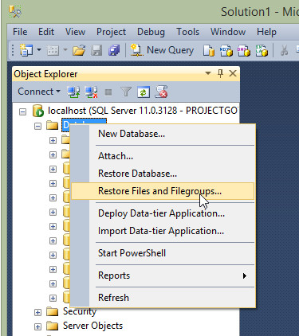
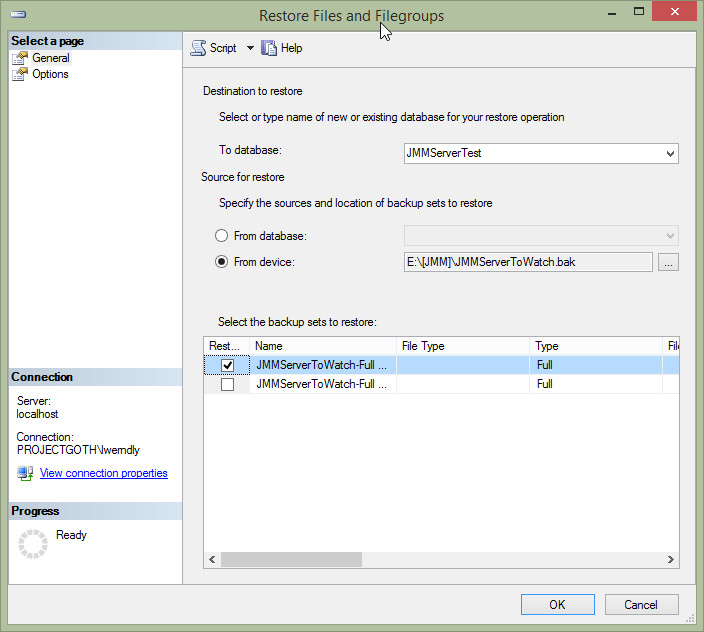
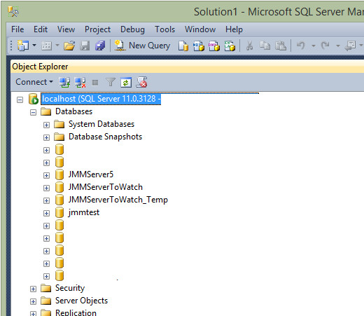
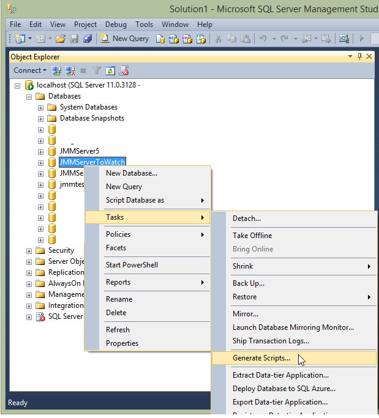
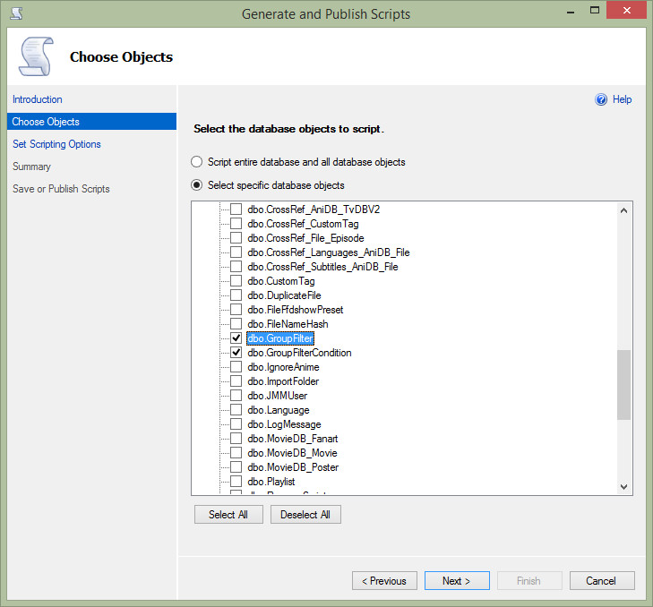
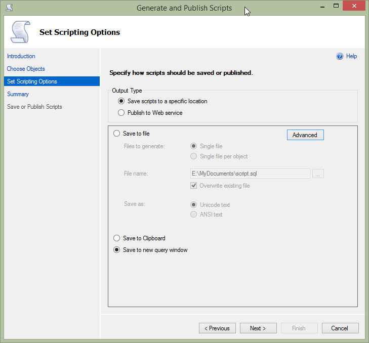
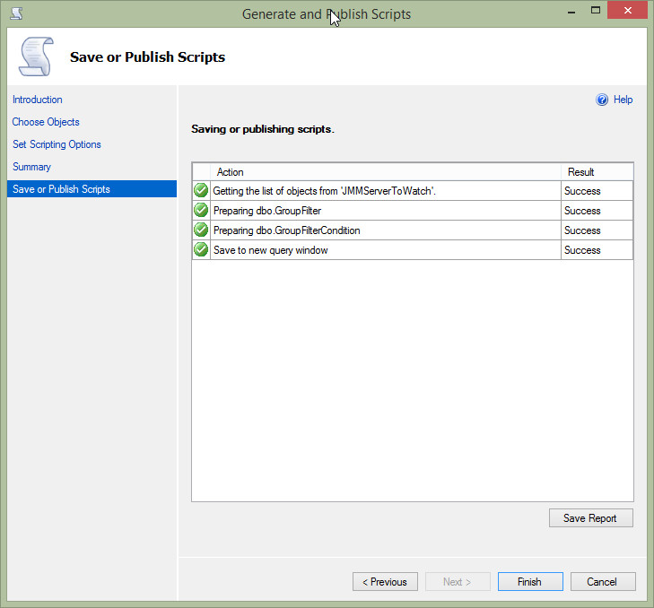
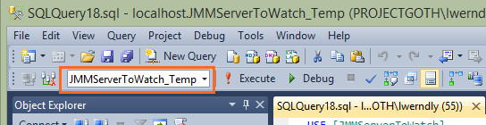

- Frequently Asked Questions
- Creating A Database Backup
- Restoring A Database Backup
- Migrating Group Filters From One Database To Another
- Links
- Downloads
- Documentation
- Changelog
- Support
- Contribute
- Chat With Us!

- Mobile Links
- Github Repo
- Dark Theme
- Light Theme
SQL Server Frequently Asked Questions
Creating A Database Backup
If you ever need to create a backup of your SQL Server, it can be a little tricky. Luckily for you we've created this guide to help you do just that.
{kind=link}
First you'll need to close JMM Server, you can't create a database backup if JMM Server is running. Next open SQL Server Management Studio and expand the database list. Right-click on your database and select Tasks and then Back Up...
Select the name and location of the backup and then press the OK button.
{kind=link}
That's it! You've created a backup of your SQL Server database. Keep reading to learn how to restore a backup.
Restoring A Database Backup
The easiest way to restore a database backup is by deleting any existing database that you want to overwrite. You can do this by right-clicking on the database and selecting the delete option.
Once down, right-click on your database and select Restore Files and Filegroups... to restore from your backup.

{kind=link}
If you want, you can change the database name, it does not have to be the same as before. On Source for Restore, select From Device and select the backup you created earlier.
{kind=link}
Press the OK button to begin the restoring process. You'll be notified when it's complete.
Migrating Group Filters from one database to another
If you've created a new SQL Server database and want to keep your previously created Group Filters, follow the following steps.
First you'll need to close JMM Server, you can't create a database backup if JMM Server is running. Next open SQL Server Management Studio and expand the database list. You'll want to create a backup of BOTH databases before making any changes.
{kind=link}
In your NEW database, the one you will be using, expand the tables view and delete all the records from the following 2 tables
- GroupFilter
- GroupFilterCondition
{kind=link}
This will create a SQL script which looks something like the following
USE [JMMServerToWatch_Temp]
GO
DELETE FROM [dbo].[GroupFilter]
WHERE Search Conditions,,
GO
Delete the WHERE line, so it now looks like the following
USE [JMMServerToWatch_Temp] GO DELETE FROM [dbo].[GroupFilter] GO
Press F5 to execute the script and delete all the rows from table. Repeat for GroupFilterCondition table (or directly change the name of the table in the script)
Now we can move onto migrating the data from the OLD database to the new database
For your OLD database, right click on the name and select Tasks -> Generate scripts
{kind=link}
Select the options shown below and click the Next Button
{kind=link}
Select the options shown below and click the Advanced Button
{kind=link}
Change only the following option Types of Data to script to Data Only
{kind=link}
You should then see the following screen after pressing Next
{kind=link}
Pressing finish should open a new query windows, where the script looks like something along the following lines
Delete the WHERE line, so it now looks like the following
USE [JMMServerToWatch] GO SET IDENTITY_INSERT [dbo].[GroupFilter] ON GO INSERT [dbo].[GroupFilter] ([GroupFilterID], [GroupFilterName], [ApplyToSeries], [BaseCondition], [SortingCriteria], [Locked]) VALUES (1, N'Favorites', 0, 1, NULL, NULL) GO INSERT [dbo].[GroupFilter] ([GroupFilterID], [GroupFilterName], [ApplyToSeries], [BaseCondition], [SortingCriteria], [Locked]) VALUES (8, N'Continue Watching (SYSTEM)', 0, 1, N'4;2', 1) GO SET IDENTITY_INSERT [dbo].[GroupFilter] OFF GO SET IDENTITY_INSERT [dbo].[GroupFilterCondition] ON GO INSERT [dbo].[GroupFilterCondition] ([GroupFilterConditionID], [GroupFilterID], [ConditionType], [ConditionOperator], [ConditionParameter]) VALUES (1, 1, 14, 1, N'') GO INSERT [dbo].[GroupFilterCondition] ([GroupFilterConditionID], [GroupFilterID], [ConditionType], [ConditionOperator], [ConditionParameter]) VALUES (2, 2, 22, 1, N'') GO INSERT [dbo].[GroupFilterCondition] ([GroupFilterConditionID], [GroupFilterID], [ConditionType], [ConditionOperator], [ConditionParameter]) VALUES (3, 3, 18, 9, N'10') GO INSERT [dbo].[GroupFilterCondition] ([GroupFilterConditionID], [GroupFilterID], [ConditionType], [ConditionOperator], [ConditionParameter]) VALUES (4, 4, 7, 9, N'200') GO INSERT [dbo].[GroupFilterCondition] ([GroupFilterConditionID], [GroupFilterID], [ConditionType], [ConditionOperator], [ConditionParameter]) VALUES (5, 5, 1, 1, N'') GO SET IDENTITY_INSERT [dbo].[GroupFilterCondition] OFF GO
Delete the following section from the script, as this refers to the old database
USE [JMMServerToWatch] GO
Then change the database in the toolbar, to point to the NEW database
{kind=link}
Press F5 to execute the script and you should now have your old group filters in the new database. Start up JMM Server and test it out